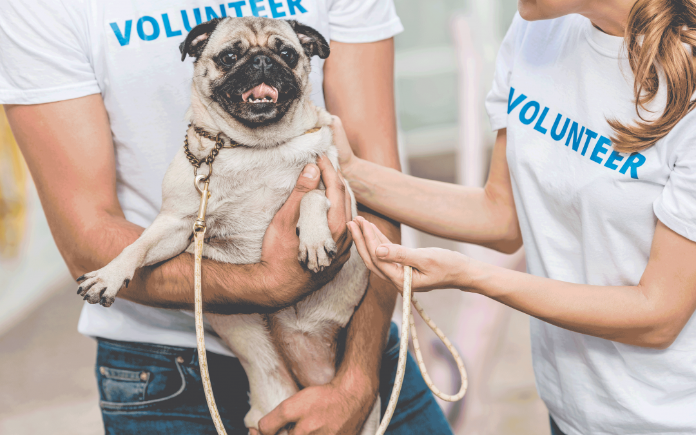
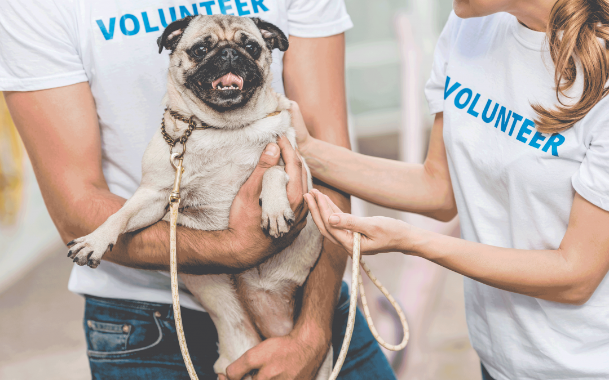
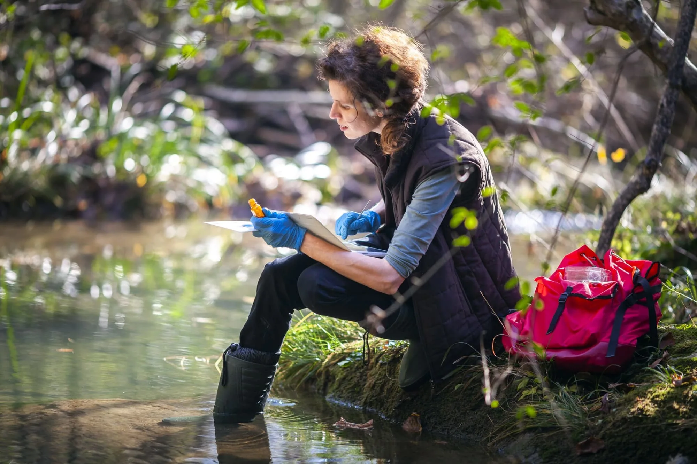
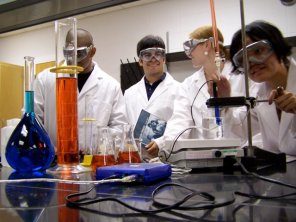
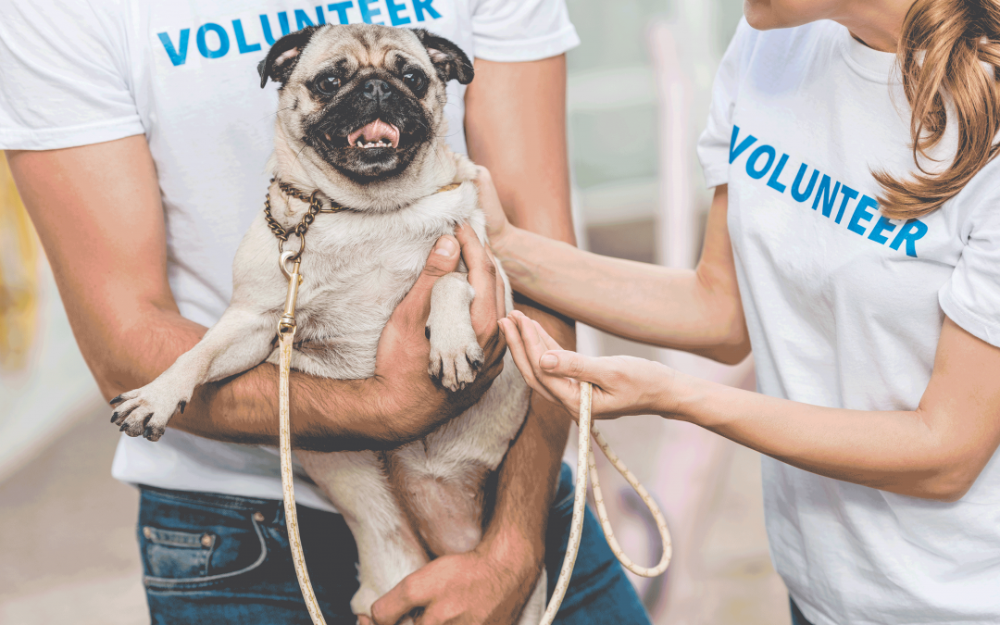
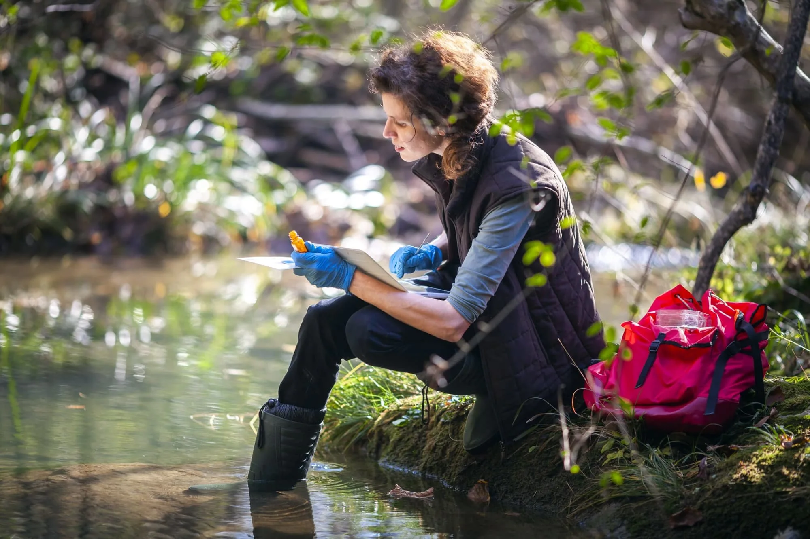
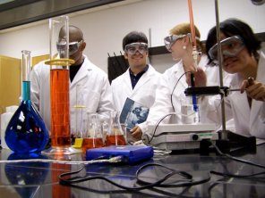

Claritza Estrada
Hello, my name is Claritza Estrada and I attend University of California, Riverside. I am currently a second year student as a Biology major; however, I plan to change to be an Environmental Science major. My previous plan was to graduate with a bachelors in Biology and go to graduate school to become a Veterinarian or do research to become a professor. Now, my plan is to either do research in environmental science or become a teacher. Since Environmental science is the study of living organisms and how they interact with our environment, doing research in It will cover a broad range of disciplines including engineering, information studies and analysis of environmental issues. Often referred to as ecology, environmental scientists aim to understand our surroundings better by utilizing different fields and combining the various findings to create a complete picture. It will deal with the interactions between the physical, chemical, and biological components of the environment. As things such as climate change and global warming are major concerns effecting people today, environmental scientists use their research to look for ways to inhibit the continuation of these problems, and, in turn, creating a sustainable future for the earth. They also investigate any possible ecological problems and look at ways to ensure these problems do not come to fruition.
During highschool up until now I have participated in many diverse activities and clubs that correlate with my career options. From clubs to volunteering, my school introduced me to many different ways to become involved in my community and discover what I am passionate about. Volunteering at the animal shelter was an interesting experience. I, along with others, played an integral role in placing animals and promoting shelter adoption. Then, I joined environmental and culture clubs. I communicated with people of similar interests, teachers that advised me and got experience with diverse situations and activities. There were plenty of opportunities to communicate and enjoy time with others all while in professional and academic environments. Many of the times I took on activities out of my comfort zone. I like to draw and paint so becoming the yearbooks ad editor for students graduating was a fun and educational time to engage in school and my passions. The whole yearbook team and challenges we faced made it all worth while.
e
My first job was a serving job at Golden Corral and then Olive Garden. A Server's responsibility is attending to diners before, during, and after their meals by helping them place, receive, and pay for their orders. As a server, we all play an important role in guest satisfaction as we are also responsible for checking on customers to ensure that they are enjoying their meals and take action to correct any problems. We need the ability to work in fast paced environments that can be stressful many of the times all while doing our “side work.” Side work is when servers are given a specific task each shift to contribute to the team and ensure we are running smoothly with stocked up necessities. We also need to be familiar with the computer system and what is on the menu, if a customer asks we must know what they are talking about or consult a manager to avoid miscommunication/ misunderstanding. Serving is a great environment to be in if one likes to socialize.
Experience
Teaching Assistant
• Ran sessions to help students learn how to code
• Reviewed and graded student coding projects
• Created educational content to help promote student education
• TA'd for over 400 students each academic quarter
Education
UC Riverside
University of California Riverside
University of California Riverside
Portfolio
 





 